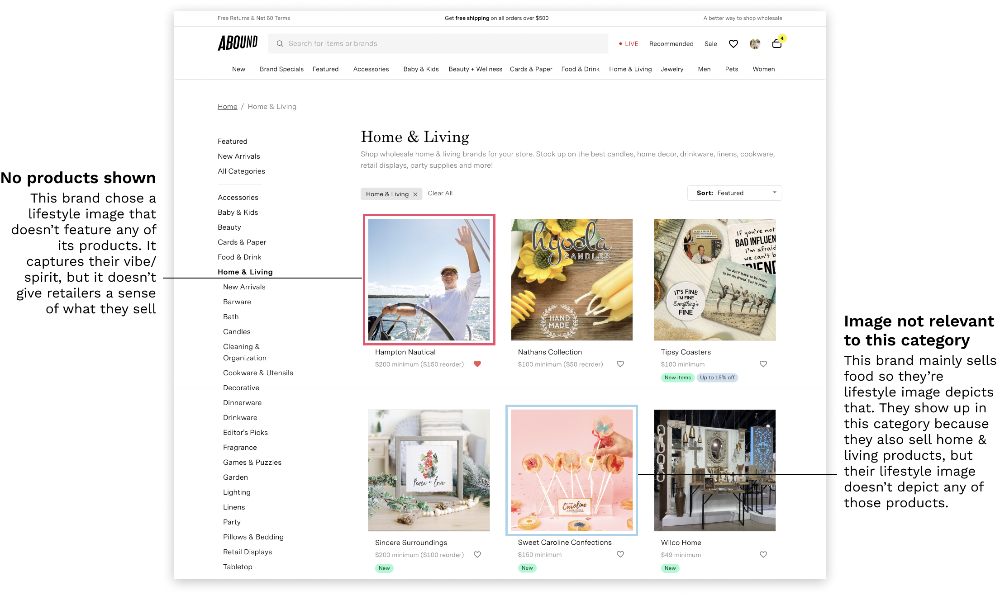

Abound is an online two-sided marketplace for buying and selling wholesale. Consistent
feedback from our retailers is that our search is "bad" & they can't find what
they're looking for, but we don't know exactly why that is. So before
I could make any improvements to the search experience, I needed to figure
out: what exactly is our
problem with search?
Research
I started this project by looking at the ui/ux of our current search
experience to identify pain points. I did this to get a deeper understanding of the
problem space & so I could explore these insights further with the retailers I planned on talking to.
Pain Points
Searching for a product
Searching for a brand
Interviewing Retailers
I interviewed 8 retailers via Zoom––the participants I chose either
expressed being unhappy with our search (found by looking through old
interview notes & PMF survey responses) OR they appeared to have had a
poor search experience (found by watching FullStory recordings).
I started by asking them questions about their current process for
finding products/brands on Abound & then did a task with them where
they actually search for something.
User interview plan
Interview Findings
"I give up" point in search results
Based on observations during the interview task, this
tends to be after 3-4 pages. At this point they'll either try another
search term or move on to other things. Is there a way we can surface
more products they'd want in these first 4 pages and/or provide them related search terms?
Relevancy issues with search results
General search terms (e.g. "coffee") & search terms with descriptors
(e.g. "wooden knife") seem to face this issue the most
General: see wide array of products that aren't necessarily related to the search term
With descriptors: see products that are relevant to each term
Searched "coffee":
See necklaces, t-shirts, etc. that have nothing to do with coffee
Searched "wooden knife":
See wooden products, knife products, and wooden knife products
Difficulty searching for brands
They search for a brand when they need to reorder and/or want to see if a
brand is on Abound. Sometimes they don't know the exact brand name or
mispell it so none of that brand's products comes up in the search results.
Plus there's confusion that the search results page is actually the brand shop page...
Search results page for "Julia Rose": Retailers mistake this
for the brand shop page because of the heading & due to seeing so
many Julia Rose products on this page
Julia
Roses's brand shop page: Each brand has their own page on Abound
that tells their story & shows all their products
Searching via category pages
On the product team we differentiate direct searches using the search bar
from browsing via our category pages. However our retailers don't have this
same distinction & consider both as "search", so some insights from browsing
the category pages were:
Lifestyle images (image that brands set to capture the spirit of
their brand) don’t give retailers enough insight as to what
the brand sells
Sometimes the lifestyle images are not relevant to the category they’re viewing

Ideation & Prioritization
I brainstormed opportunities & improvements based on my interview findings
& the pain points I identified:
Prioritization Mapping
I worked with my product manager to determine which ideas we wanted to
test & then prioritized them based on how much they might impact GMV and
engineering effort:
We prioritized building features that require low engineering effort &
have the potential to have high impact on GMV (the upper left section in
the priority map).
Discovery
Now that we had our features prioritized, I did some competitive research
to get some inspiration and see if there were any established patterns. I looked
at Uber Eats & Instagram for search ui/ux, Etsy & Instcart for brand CTA
on search result pages, and Faire & Tundra for image carousel inpsiration.
Designs
Improve search dropdown ui/ux
Update the ux so that when I click the "X" to clear a recent search it
just removes the search term & doesn't close the dropdown
Make the dropdown full width & shift all the content up so that the
top bar isn’t showing
Add a “search” icon to the left of the search term
with a gray background to improve the ui. For recent search terms, use a
"time" icon & move the “X” to the right side.
Hide recent search terms when you start typing as they're no longer needed
since the retailer already has a search in mind. Plus
it moves up the brand suggestions.
previous
current
Updates to search result pages
I focused my changes for this page on making it more obvious it's a search
results page & making it easier to get to a brand shop page:
Change header copy to: Results for “[search term]” so that it’s more clear
that this is a search results page and not the brand's shop page. Plus
this format is a more standard practice.
Show a CTA for the brand shop page if the retailer enters an exact brand name.
For example if I enter, “Sticks Inc.” I would see the brand CTA. If I
entered, “Sticks” I wouldn’t see the brand CTA.
previous
current
Image carousel on brand cards
Retailers will be able to click through up to 5 product images on brand
cards to get a better sense of what the brand offers.
When you hover over the card image on desktop, the arrows for you to
click through the carousel will appear
To make this feature discoverable, I included dot indicators below the
card image. This was especially needed for mobile since it won't have the
hover effect
previous
current
Learnings
Improve search dropdown ui/ux: After releasing the ui/ux enhancements,
we saw frustrated clicks in the search dropdown decrease & clicks on the
brand suggestions increase. Plus there are still more ideas I'd love to
test—on the roadmap is showing trending search terms & personalizing the
featured brands in the search dropdown.
Updates to search result pages: The addition of the brand CTA led
to more retailers finding the brand shop page from the search results page.
Right now the brand CTA only appears if the search term exactly matches a
brand name. We could make this even better for retailers by having the CTA
show up for slight misspellings.
Image carousel on brand cards: During testing we saw performance
issues due to adding so many images to the page. As a result, we didn't end
up releasing this feature because we didn't want to greatly hinder performance
for these highly trafficked pages. Page performance was a big takeaway for
me coming out of this project! It's now something I think about when
designing & discussing designs with engineers.